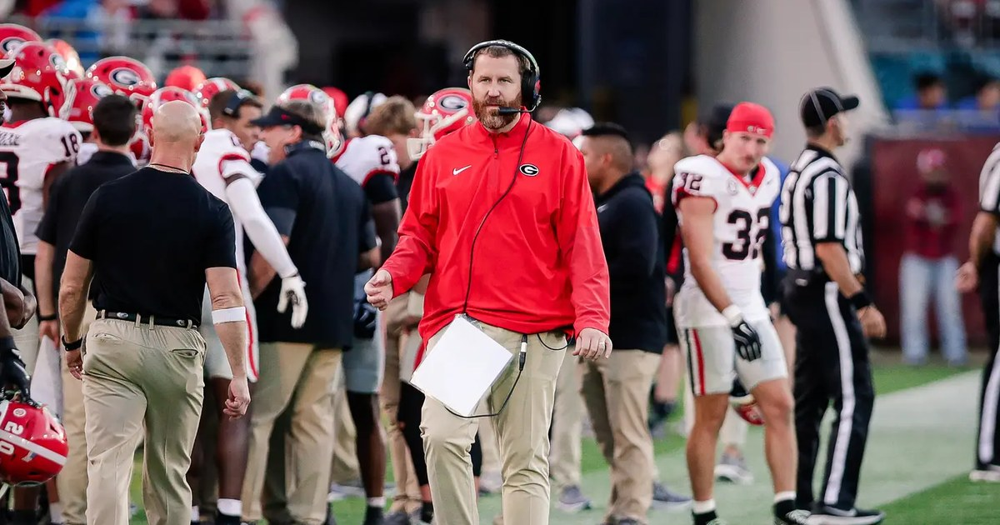

Florida State hires Georgia's Glenn Schumann — the 36-year-old first-timer tasked with bringing the Seminoles back
Florida State has its next head coach: Georgia defensive coordinator Glenn Schumann, 36, on a five-year deal. He stays with the Bulldogs through the postseason, then takes over a program that fired Mike Norvell three weeks ago.

Disclosure: this post contains affiliate links. I earn a commission on qualifying purchases.
The hire
Florida State has its next head coach. The Seminoles announced Monday evening that Georgia defensive coordinator Glenn Schumann will take over the program, ending a three-week search that began when Mike Norvell was fired on November 1.
ESPN's Pete Thamel and Andrea Adelson first reported the agreement, and the Tallahassee Democrat confirmed it. Schumann, 36, has agreed to a five-year deal, per ESPN, and he will remain with Georgia through the Bulldogs' postseason run before taking over in Tallahassee full time.
He is a first-time head coach. That is the gamble, and Florida State knows it — the Seminoles reportedly preferred a candidate with head-coaching experience, and hired the one without it anyway. What Schumann lacks in that column, he makes up for in the only currency that matters in this sport: he has spent his entire adult coaching life inside the two programs that have defined the last decade of college football.
The pedigree
Schumann enrolled at Alabama in 2008 to work under Nick Saban and spent seven seasons on the Crimson Tide's defensive staff. He followed Kirby Smart to Georgia in 2016, coached inside linebackers for all 11 seasons there, became co-defensive coordinator in 2019, and has run the defense as its coordinator since 2022.
The résumé from those stops is hard to argue with. He has been on staff for six national championships between Alabama and Georgia, including Georgia's back-to-back titles in 2021 and 2022 — he was co-defensive coordinator for the first and the defensive coordinator and primary play caller for the second. As a position coach, he produced three Butkus Award winners, making him the only primary position coach of multiple winners from 2016 through 2025.
The defense he is leaving behind is still elite. Through 11 games this season, Georgia ranks sixth nationally in total defense and scoring defense, eighth in sacks and ninth in rushing defense. He also becomes the seventh former Smart assistant to land a college head-coaching job, joining Dan Lanning, Shane Beamer, Fran Brown, Sam Pittman, Mel Tucker and Dell McGee.
The job he inherits
Norvell's firing came after a 3-5 start in his seventh season, and the numbers explain why the leash ran out: 41-39 overall in six-plus seasons, and a $50 million buyout Florida State is paying anyway. Interim head coach Rick Stockstill has steadied things at 2-1 since taking over, but this is a rebuild, not a tune-up.
The calendar gives Schumann no runway. Signing Day is one week away, and the transfer portal opens January 4 and runs through January 13. His first major decision — and the one that will define the hire as much as anything he does on defense — is who he picks as offensive coordinator. He is a defensive coach taking over a program whose problems have mostly been on the other side of the ball.
There is a personal thread here, too. Schumann is a Valdosta, Georgia, native whose grandfather, Jack Haskin, founded Florida State's Flying High Circus and was an assistant coach for the Seminoles' inaugural football season in 1947. And the hire carries a sting for anyone in Tallahassee who remembers December 30, 2023: Schumann's Georgia defense beat Florida State 63-3 in the Orange Bowl, a result that helped accelerate Norvell's downfall. The man who helped end the last era is now in charge of the next one.
What's next
Schumann finishes the season with Georgia first, so Florida State's new era starts in earnest once the Bulldogs' postseason ends. The Seminoles will not have to wait long to measure him against his old program, either — Florida State and Georgia are scheduled to meet in Nashville's Nissan Stadium in 2028, his second season on the job.
Sources
• Glenn Schumann Named Florida State Head Coach (Florida State University)
• Florida State hires Glenn Schumann as next head football coach (Tallahassee Democrat)
• Florida State hiring Georgia DC Glenn Schumann as next football coach (USA TODAY)
• Report: Schumann signs 5-year deal to coach Florida State (theScore)
• Florida State Hires Glenn Schumann as New Head Football Coach (247Sports)
Gear up: Fanatics